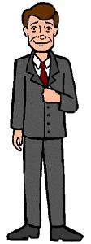

Characters
Characters
|
Jake |
|---|
|

Full Name: Jacob Morgendorffer Age: Mid 40's Vocation: Self-employed marketing consultant Parents: Ruth and "Mad Dog" Morgendorffer Spouse: Helen Children: Daria and Quinn First Appearance: Esteemsters
Jake is not unlike many sitcom fathers: well meaning, but totally clueless when it comes to the intricacies of parenthood. He is almost always stressed out over some issue or another; that, combined with many unresolved issues from his childhood and a tendency to blow the tiniest of things way out of proporation, often get in the way of his best intentions. He's also living proof that humans and jellyfish can have offspring, as he is totally spineless and lets Helen run roughshod over him. Like Helen, Jake is also a former hippie, but unlike his peers, he somehow managed to get through the peace-and-love era without compromising a single ounce of his stress (which finally caught up with him when he suffered a mild heart attack in "Jake of Hearts" (#309)). |
|
Voice:
Jake's voice is performed by Julian Rebolledo. |